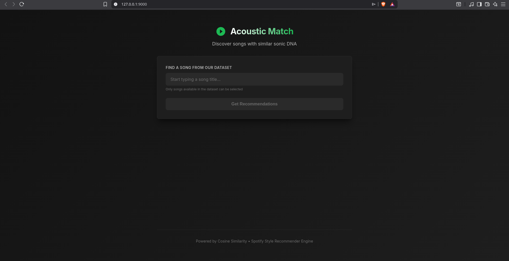

AcousticMatch: ML Music Recommender
Tech: HTML, CSS, JavaScript, Python, FastAPI, Uvicorn, Pydantic, Scikit-learn, Pandas, NumPy, Joblib
View on GitHubAbout the Project
AcousticMatch is a full-stack, machine learning-powered music recommendation engine. Rather than relying on collaborative filtering (what other users listen to), this application analyzes the actual "sonic DNA" of a track using Spotify's audio features (like Danceability, Energy, Acousticness, and Tempo). By applying dimensionality reduction and nearest-neighbor algorithms, the engine bridges the semantic gap to find songs with a genuinely similar vibe and acoustic profile.
Technologies & Concepts Used
- Backend: Python, FastAPI, Uvicorn (ASGI server), Pydantic (Data validation).
- Machine Learning: Scikit-learn, Pandas, NumPy, Joblib (Model serialization).
- Frontend: HTML5, CSS3, Vanilla JavaScript (Fetch API, DOM manipulation).
- Unsupervised Machine Learning: Utilizing the K-Nearest Neighbors (KNN) algorithm with cosine distance metrics.
- Dimensionality Reduction: Applying Principal Component Analysis (PCA) to compress feature space.
- Feature Engineering: Using StandardScaler to normalize disparate data scales.
- RESTful API Design: Decoupling the frontend from the machine learning engine using modern, asynchronous endpoints.
Informazioni sul Progetto
AcousticMatch è un motore di raccomandazione musicale full-stack basato sul machine learning. Invece di affidarsi al filtraggio collaborativo, l'applicazione analizza il "DNA sonoro" di una traccia utilizzando le caratteristiche audio di Spotify (Ballo, Energia, Acustica e Tempo). Applicando algoritmi di riduzione della dimensionalità e dei nearest-neighbor, il motore trova canzoni con un'atmosfera e un profilo acustico genuinamente simili.
Tecnologie e Concetti Utilizzati
- Backend: Python, FastAPI, Uvicorn, Pydantic.
- Machine Learning: Scikit-learn, Pandas, NumPy, Joblib.
- Frontend: HTML5, CSS3, Vanilla JavaScript.
- Machine Learning Non Supervisionato: Utilizzo dell'algoritmo K-Nearest Neighbors (KNN) con distanza coseno.
- Riduzione della Dimensionalità: Applicazione della Principal Component Analysis (PCA).
- Feature Engineering: Utilizzo di StandardScaler per normalizzare i dati.
- Design API RESTful: Separazione del frontend dal motore ML tramite endpoint asincroni.